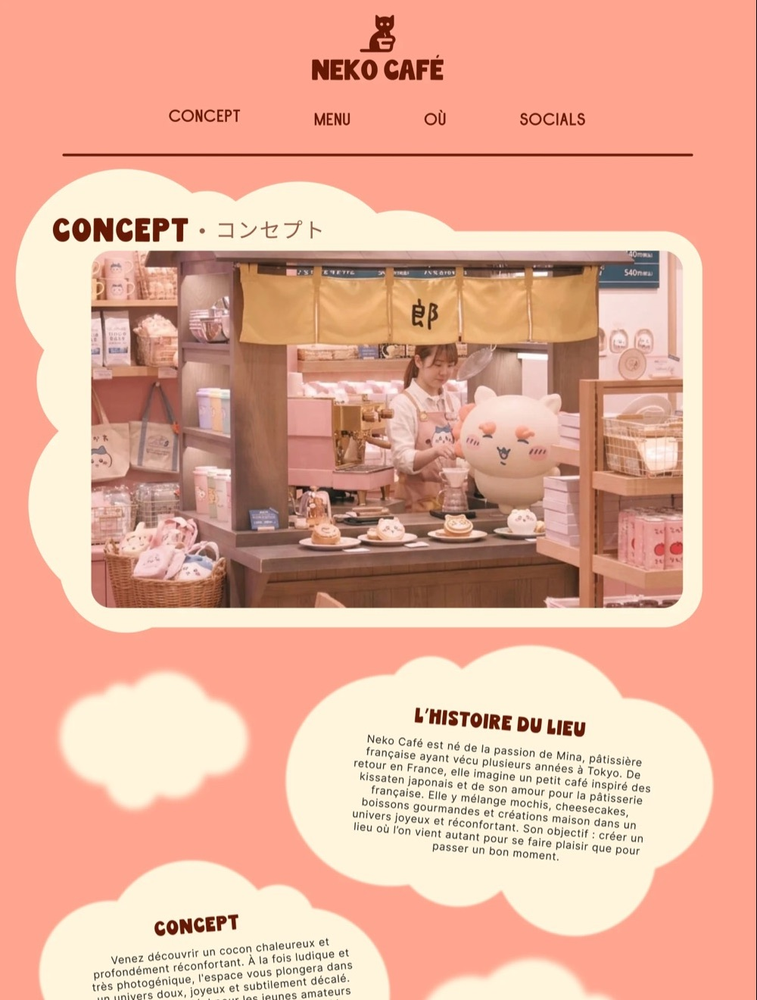

01 · UX/UI
Neko café landing page d'un coffee shop fictif
- Sujet
- Neko café est un salon de thé imaginaire, à mi-chemin entre le kissaten japonais et la pâtisserie française. Il lui fallait une page d'accueil qui donne envie de pousser la porte et dise l'essentiel : le concept, la carte, l'adresse.
- Démarche
- J'ai découpé la page en trois temps — concept, menu, où nous trouver — puis installé sur Figma un univers doux : formes en nuages, palette corail, crème et vert matcha, titres doublés en japonais, cartes produits avec photo et prix.
- Résultat
- Une maquette de landing page complète, de l'en-tête au pied de page : l'histoire du lieu, sept produits phares, un bouton vers toute la carte et un plan d'accès.

tout nouveau !